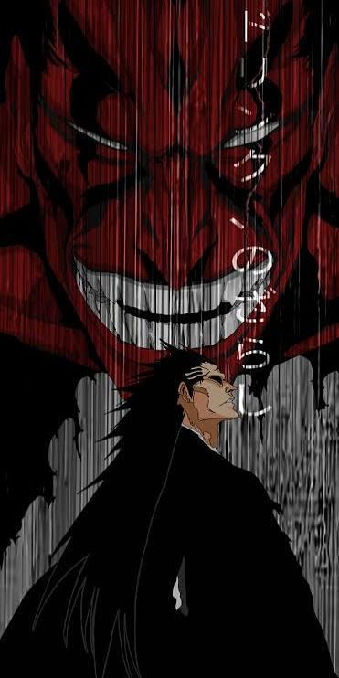
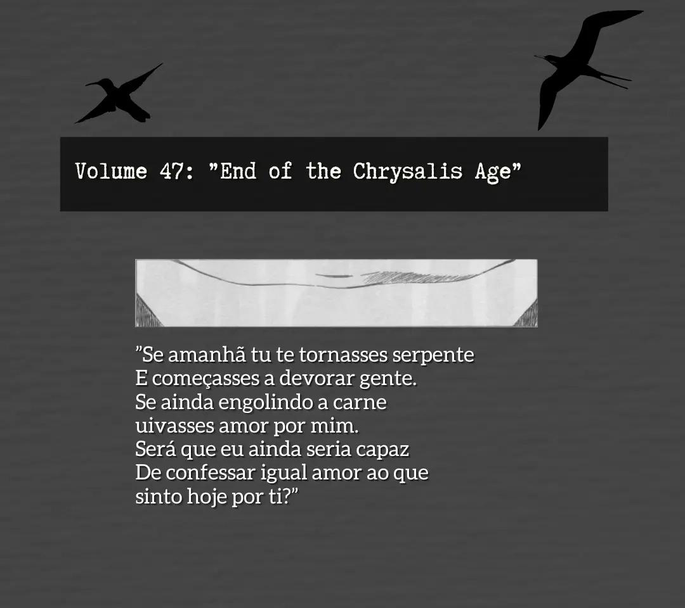

Animes
Bleach: Espadas, Estilo e o Mundo Espiritual

Oi pessoal, tudo bem? Quero apresentar uma das maiore sobras primas da hitória dos animes: Bleach!
Sinopse: Ichigo Kurosaki é um estudante de ensino médio rebelde que tem a capacidade de ver fantasmas. Sua vida muda drasticamente quando ele conhece Rukia Kuchiki, uma Ceifeira de Almas (Shinigami). Ao ser ferida defendendo a família de Ichigo de um monstro espiritual conhecido como Hollow, Rukia transfere seus poderes para ele, transformando-o em um Shinigami substituto.
Se eu tiver que definir Bleach,em poucas palavras, seria peak, trilha sonora esplendida desing incrivel e história praticamente perfeita. O design dos personagens criados por Tite Kubo, as transformações de espadas (as icônicas Shikai e Bankai) e o sistema de facções da Sociedade das Almas são impecáveis.
A saga do Resgate da Rukia continua sendo um dos melhores arcos de invasão de toda a história dos animes de combate. Além disso, o retorno recente com a adaptação da *Guerra Sangrenta dos Mil Anos* elevou a animação a um nível cinematográfico inacreditável, fazendo qualquer fã antigo se arrepiar. Vou deixar alguns paineis e poemas do Sensei Kubo abaixo.



Ficha Técnica
- Título original: Bleach / Thousand-Year Blood War
- Ano de lançamento: 2004 / 2022
- Direção: Noriyuki Abe / Tomohisa Taguchi
- Criador original: Tite Kubo (Deus Kubo)